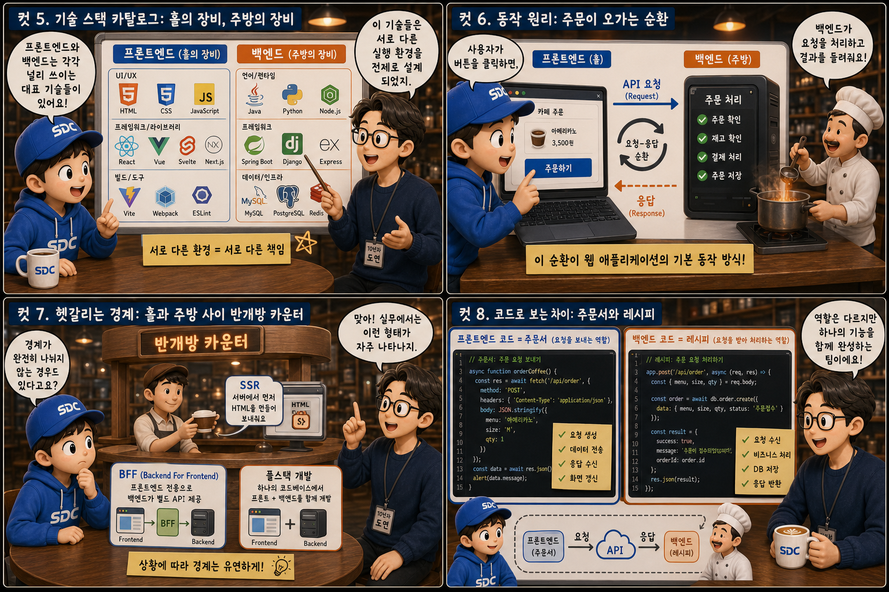

우리가 클릭하고 스크롤하는 화면은 빙산의 일각입니다. 그 뒤에는 요청을 받아 데이터를 다루고 규칙을 적용하는 또 다른 세계가 존재합니다. 이 글에서는 그 두 세계 — 프론트엔드와 백엔드 — 가 각각 무엇을 책임지는지, 손님이 앉아 있는 홀과 눈에 보이지 않는 주방이 있는 레스토랑 하나에 비유해 하나씩 살펴봅니다.
PART 1 / 3 — 두 세계의 발견 (컷 01–04)
fourcut-01 — 컷 01 ~ 04
컷 01
이 화면 뒤에는 무엇이 있을까
우리가 보는 모든 웹 화면은 사실 두 개의 세계로 나뉘어 만들어진다.
노트북 화면 속 평범한 쇼핑몰 페이지. 그 뒤쪽 공간이 무대 커튼처럼 반으로 갈라지면, 왼쪽에는 손님과 웨이터가 있는 밝은 홀이, 오른쪽에는 냄비 연기가 피어오르는 주방이 나타납니다. 눈에 보이는 세계와 보이지 않는 세계 — 그것이 프론트엔드와 백엔드입니다. 두 공간 사이에는 여닫이 서빙 문 하나가 있어 서로를 연결합니다.
컷 02
정의부터 명확히: 누가 화면이고 누가 부엌인가
프론트엔드는 브라우저에서 실행되는 보이는 부분, 백엔드는 서버에서 실행되는 보이지 않는 부분이다.
프론트엔드(front-end)는 사용자의 브라우저 안에서 실행되는 코드입니다. 화면에 그려지는 버튼, 글자, 이미지, 그리고 클릭했을 때의 반응까지 모두 여기에 속합니다. 백엔드(back-end)는 사용자 눈에 보이지 않는 서버에서 실행되는 코드로, 요청을 받아 데이터를 조회하고 계산하고 규칙을 적용한 뒤 결과를 돌려주는 역할을 합니다. 손님이 앉아 메뉴를 고르는 홀이 프론트엔드라면, 그 메뉴가 실제로 만들어지는 주방이 백엔드입니다. 홀은 사용자가 직접 밟고 다니는 공간이지만, 주방은 손님이 들어갈 수 없는 잠긴 공간이라는 점을 기억하세요. client side / server side
컷 03
나란히 비교: 홀의 도구, 주방의 도구
프론트엔드는 HTML/CSS/JS로 화면을 그리고, 백엔드는 서버 언어로 데이터와 로직을 처리한다.
프론트엔드는 HTML로 구조를 짜고 CSS로 꾸미고 JavaScript로 동작을 붙여, 사용자가 직접 보고 클릭하는 화면을 브라우저 안에서 만들어냅니다. 백엔드는 Node.js, Python, Java 같은 서버 언어로 작성되며, 데이터베이스에 접근하고 인증이나 결제 같은 핵심 규칙을 처리한 뒤 그 결과만 프론트엔드에 돌려줍니다. 웨이터가 손님 앞에서 서빙만 하듯, 프론트엔드는 표현을 담당하고 실제 재료 손질과 조리는 주방인 백엔드에서 이루어집니다.
컷 04
한 문장으로 정리하면
이 한 문장만 기억해도 어떤 코드가 어디에 속하는지 대부분 구분할 수 있다.
FRONTEND
사용자가 보고 조작하는 층
BACKEND
데이터와 규칙을 다루는 층
definition
화면에 그려지고 클릭에 반응하면 프론트엔드, 저장하고 검증하고 계산하면 백엔드입니다.
PART 2 / 3 — 도구와 동작 원리 (컷 05–08)

fourcut-02 — 컷 05 ~ 08
컷 05
기술 스택 카탈로그: 홀의 장비, 주방의 장비
각 도구는 실행되는 장소 — 브라우저용인지 서버용인지 — 가 처음부터 정해져 있다.
프론트엔드에서는 React, Vue 같은 라이브러리와 프레임워크가 HTML, CSS, JavaScript 위에서 화면을 그리는 데 쓰입니다. 백엔드에서는 Node.js의 Express, Python의 Django, Java의 Spring 같은 프레임워크가 요청 처리와 데이터베이스 연동을 담당합니다. 두 스택의 이름은 다르지만 공통점은 각각 브라우저용인지 서버용인지가 처음부터 정해져 있다는 점 — 서로 다른 환경은 곧 서로 다른 책임을 의미합니다.
컷 06
동작 원리: 주문이 오가는 순환
클릭 → 요청 → 처리 → 응답 → 화면 갱신. 이 순환이 웹 애플리케이션의 기본 동작 방식이다.
사용자 클릭→프론트엔드→HTTP request→백엔드 + DB→JSON response→화면 갱신
사용자가 버튼을 클릭하면 프론트엔드는 그 요청을 API 호출 형태로 백엔드에 보냅니다. 백엔드는 요청을 받아 필요하면 데이터베이스를 조회하거나 계산을 수행하고, 그 결과를 JSON 같은 형식으로 다시 프론트엔드에 돌려줍니다. 프론트엔드는 이 응답을 받아 화면을 갱신합니다. 손님이 주문하면 웨이터가 주방에 전달하고, 요리가 끝나면 다시 웨이터를 거쳐 손님에게 돌아오는 것과 같은 순환입니다.
컷 07
헷갈리는 경계: 홀과 주방 사이 반개방 카운터
SSR, BFF, 풀스택 개발처럼 경계가 흐려지는 지점들이 실무에는 존재한다.
실무에서는 프론트엔드와 백엔드의 경계가 항상 깔끔하지만은 않습니다. SSR(Server Side Rendering)은 서버가 미리 화면의 HTML을 만들어 내려주는 방식으로, 원래 브라우저의 몫이던 렌더링 일부를 서버가 대신합니다 — 손님이 보는 앞에서 마지막 플레이팅을 해주는 오픈 키친 카운터처럼요. BFF(Backend for Frontend)는 특정 프론트엔드를 위해 존재하는 얇은 백엔드 계층으로, 여러 백엔드 서비스를 프론트엔드가 쓰기 좋은 형태로 가공해 줍니다. 풀스택 개발자는 이 양쪽을 모두 다룰 수 있는 사람을 뜻하지만, 그렇다고 프론트엔드와 백엔드라는 역할 구분 자체가 사라지는 것은 아닙니다. the line gets blurry
컷 08
코드로 보는 차이: 주문서와 레시피
프론트엔드 코드는 요청을 보내고, 백엔드 코드는 요청을 받아 데이터를 처리한다.
프론트엔드 — 주문서 작성
// 주방에 주문서를 넣는다const res = await fetch('/api/orders');
const data = await res.json();
render(data); // 화면 갱신
프론트엔드 코드는 보통 fetch나 axios 같은 도구로 특정 주소에 요청을 보내는 역할을 합니다. fetch('/api/orders')는 주방에 주문서를 넣는 행위와 같습니다. 백엔드 코드는 그 요청을 받는 라우트를 정의하고, 데이터베이스에서 필요한 정보를 조회한 뒤 JSON 형태로 응답을 돌려줍니다. 두 코드는 서로 다른 위치에서 실행되지만 정해진 약속, 즉 API 규격을 통해 대화합니다.
PART 3 / 3 — 실전 감각과 요약 (컷 09–12)
fourcut-03 — 컷 09 ~ 12
컷 09
흔한 실수: 주방 레시피를 홀에 붙여둔 웨이터
브라우저 코드는 누구나 열어볼 수 있다. 중요한 검증은 반드시 백엔드에서 다시 해야 한다.
⚠ client-side validation is visible
브라우저에서 실행되는 프론트엔드 코드는 개발자도구만 열면 누구나 그대로 들여다보고 값을 바꿀 수 있습니다. 가격 계산, 권한 확인, 비밀 키 같은 민감한 로직을 프론트엔드에만 두면 쉽게 위조되거나 우회될 수 있습니다.
✓ server-side validation is required
프론트엔드의 입력값 검증은 사용자 경험을 좋게 만드는 편의 장치일 뿐, 보안의 근거가 될 수 없습니다. 실제로 신뢰할 수 있는 검증과 판단은 반드시 눈에 보이지 않는 백엔드에서 한 번 더 이루어져야 합니다.
주방의 레시피북을 손님 테이블 위에 펼쳐두는 웨이터를 상상해 보세요. 돋보기를 든 손님은 언제든 그 내용을 들여다볼 수 있습니다. 레시피는 주방에 두고, 주방에서 다시 확인해야 합니다.
컷 10
트레이드오프 비교표: 홀과 주방의 규칙집
실행 위치, 보안 노출도, 배포 방식, 담당 역할 — 여러 축에서 두 세계는 뚜렷하게 다르다.
same app, different responsibilities
비교 축
프론트엔드 (홀)
백엔드 (주방)
실행 위치
사용자의 브라우저
서버
보안 노출도
코드가 그대로 노출 (열린 자물쇠)
외부에 노출되지 않음 (닫힌 자물쇠)
배포 방식
CDN 등 정적 파일 배포
서버 배포 · 컨테이너
담당 역할
화면 · 상호작용
데이터 · 로직 · 규칙
변경 반영 속도
새로고침으로 즉시 반영
서버 재배포 필요
프론트엔드는 브라우저에서 실행되고 정적 파일 형태로 배포되며 즉시 화면에 반영되지만, 코드가 노출되어 있어 보안에 취약합니다. 백엔드는 코드가 외부에 노출되지 않아 민감한 로직과 데이터를 안전하게 다룰 수 있습니다. 이런 차이 때문에 화면과 상호작용은 프론트엔드가, 데이터의 정합성과 규칙 적용은 백엔드가 맡는 역할 분담이 자연스럽게 만들어집니다.
컷 11
실전 디버깅: 어디부터 확인할까
화면이 이상하면 프론트엔드부터, 데이터 값이 잘못됐다면 백엔드부터 확인한다.
🔍 “화면이 이상하다” → 홀부터 점검
브라우저 콘솔 로그 확인
레이아웃 · CSS 확인
UI / 프론트 로직 확인
🔍 “데이터가 이상하다” → 주방부터 점검
네트워크 탭 · API 응답 확인
서버 로그 확인
DB · 비즈니스 로직 확인
화면 레이아웃이 깨지거나 버튼이 반응하지 않으면 대개 프론트엔드 코드나 브라우저 콘솔의 에러부터 확인하는 것이 빠릅니다. 반대로 화면은 멀쩡한데 표시되는 숫자나 목록 자체가 틀렸다면, 네트워크 탭으로 API 응답값을 확인하고 그다음 백엔드 로그와 데이터베이스 쪽을 살펴보는 순서가 효율적입니다. 문제가 홀에서 벌어졌는지 주방에서 벌어졌는지를 먼저 가늠하는 것이 디버깅 시간을 크게 줄여줍니다.
컷 12
판별법과 핵심 요약: 불을 꺼도 남는 것
브라우저를 꺼도 남아 있으면 백엔드, 브라우저 안에서만 존재하면 프론트엔드다.
가장 간단한 판별법은 이것입니다. 브라우저 탭을 닫아도 여전히 존재하고 다음에 다시 접속해도 그대로 있는 것은 백엔드이고, 브라우저 안에서만 잠깐 그려졌다가 탭을 닫으면 사라지는 것은 프론트엔드입니다. 노트북을 덮어 홀의 불이 꺼져도, 주방은 여전히 불을 밝힌 채 돌아갑니다.
실행 위치가 다르다역할이 다르다보안 노출도가 다르다배포 방식이 다르다경계는 흐려질 수 있다꺼도 남으면 백엔드
하나의 레스토랑, 두 개의 세계
프론트엔드는 사용자가 보고 조작하는 화면을 만들고, 백엔드는 데이터와 규칙을 지키며 그 화면에 필요한 정보를 공급합니다. 손님이 앉는 홀과 불이 꺼지지 않는 주방처럼, 두 세계는 역할이 다르지만 하나의 웹 애플리케이션을 함께 완성합니다.